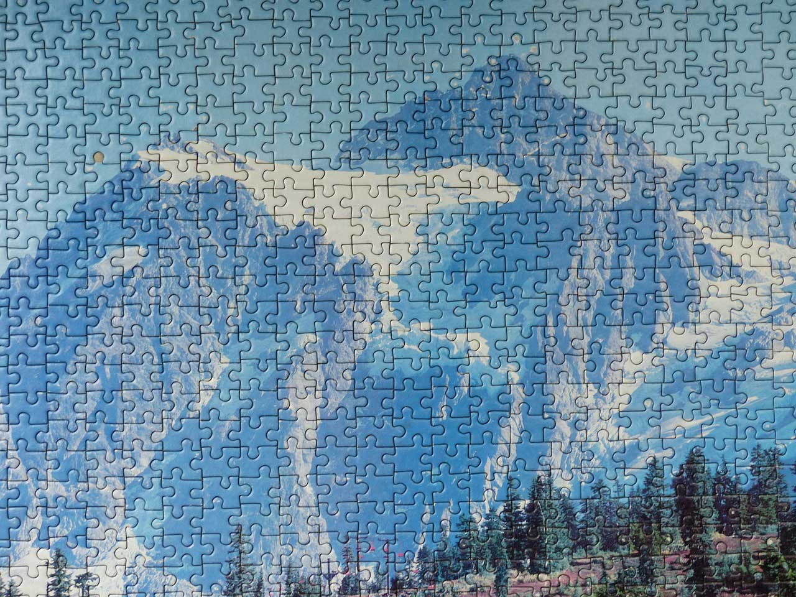

A jigsaw puzzle (with context, sometimes just jigsaw or just puzzle) is a tiling puzzle that requires the assembly of often irregularly shaped interlocking and mosaicked pieces, each of which typically has a portion of a picture. When assembled, the puzzle pieces produce a complete picture.
John Spilsbury, a London cartographer, is believed to have produced the first jigsaw puzzle around 1760, using a marquetry saw.
Most modern jigsaw puzzles are made of paperboard as they are easier and cheaper to mass-produce. An enlarged photograph or printed reproduction of a painting or other two-dimensional artwork is glued to cardboard, which is then fed into a press. The press forces a set of hardened steel blades of the desired pattern, called a puzzle die, through the board until fully cut.
Typical images on jigsaw puzzles include scenes from nature, buildings, and repetitive designs—castles and mountains are common, as well as other traditional subjects. However, any picture can be used. Artisan puzzle-makers and companies using technologies for one-off and small print-run puzzles utilize a wide range of subject matter, including optical illusions, unusual art, and personal photographs. In addition to traditional flat, two-dimensional puzzles, three-dimensional puzzles have entered large-scale production, including spherical puzzles and architectural recreations.